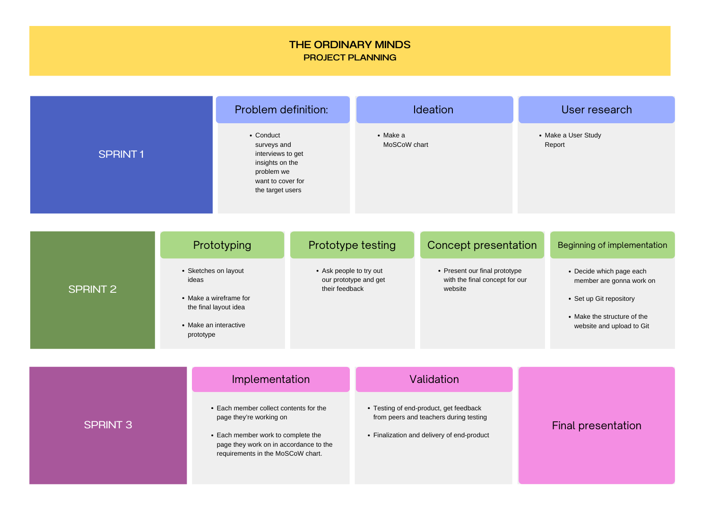

For my group project I am in charge of maintaining the planning and task organization tool that we use, which is Notion. For every feedback the group received from teachers, I write them down for the meeting discussion, then after every meeting, I update the "To Do" section in the Notion Workspace, crossing out the tasks that are done and add new tasks that must be done. I also keep track of the deadlines for our group project.
Then for the group project we also made a project planning chart that we sticked to, to organize our work more and to have a clear overview of what has to be done in each sprints.

Reflection
Through this work I learned how to do a future-oriented organisation, by planning and dividing tasks among the group, and also keeping track of the plans and each member's progress on their tasks. I also learned how to familiarize myself with thinking ahead everytime and plan well according to the time given to complete the assignments.